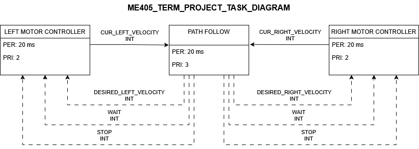
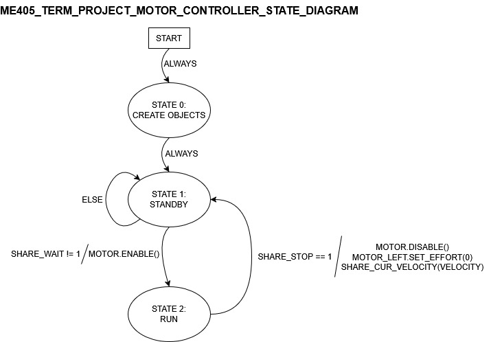
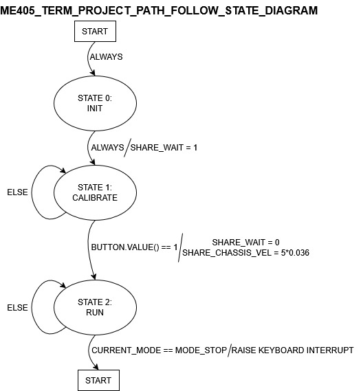

|
My Project
|

|
|
My Project
|
|
Welcome to the Romi Time-Trials Project**—a self-navigating robot designed for autonomous competition in **ME 405: Mechatronics.
The goal of this project is to build a highly precise, efficient, and autonomous Romi robot that can:
This project integrates real-time task scheduling, control theory, and embedded systems to create a functional and adaptable robotic platform.
Click this link to watch our Romi's time trial recorded during the in-lab demonstration
cotask.py and shared data via task_share.py.The system is built on a task-based multitasking model, where each component operates as a separate task:



The project is organized into several modules:
Main and Kinematics:
main.py – Main entry point; initializes tasks and the scheduler.romi.py – Handles robot kinematics, tracking position, heading, and distance.motor.py – Motor driver interface.pid.py – PID controller for motor speed regulation.imu.py – Interface to the IMU sensor.ir.py – IR sensor interface for line following.Task Scheduling and Data Sharing:
cotask.py – Cooperative task scheduler.task_share.py – Shared data and communication utilities.cqueue.py – Custom C-based queue implementations for efficiency.Sensors and Peripherals:
bump.py – Bumper switch interface.encoder.py – Quadrature encoder for velocity sensing.pin_definitions.py – Hardware pin mappings.